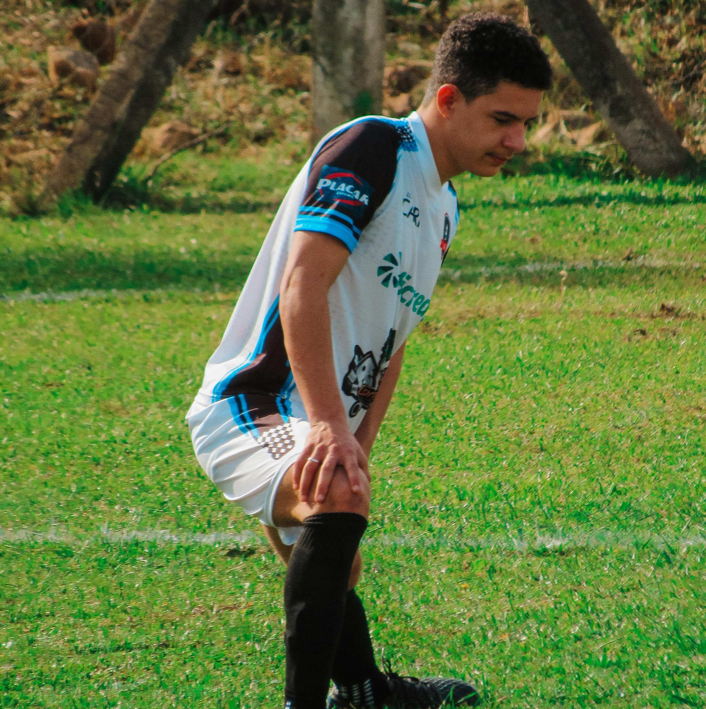
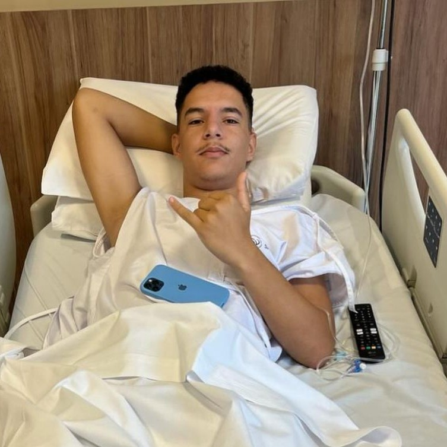
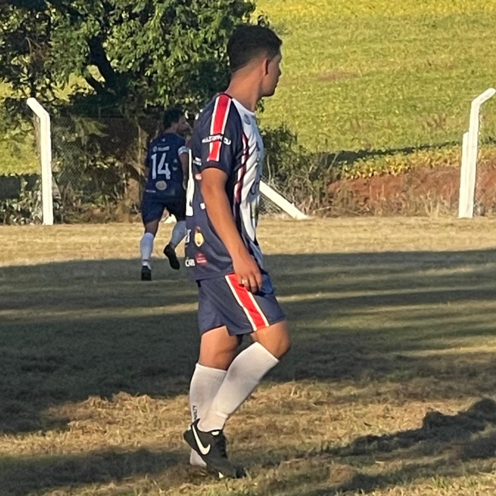

Futebol

Desde criança empre gostei muito de praticar futebol. Jogova alguns campeonatos e torneios, na posição de lateral

Mas infelizmente no ínicio de 2024, acabei lesionando o joelho. E realizei uma grande cirurgia. Pensei que não voltaria jogar.

Com muita determinação e esforço. Felizmente mês passado voltei a jogar campeonatos, isso para mim foi uma grande conquista.
Torço para o inter e para que o grêmio vá mal.